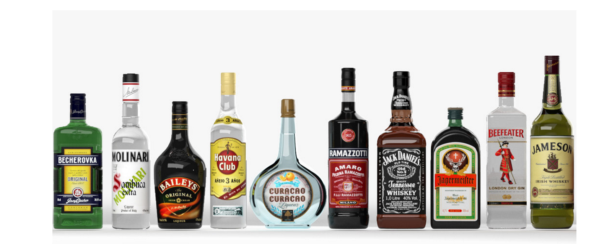
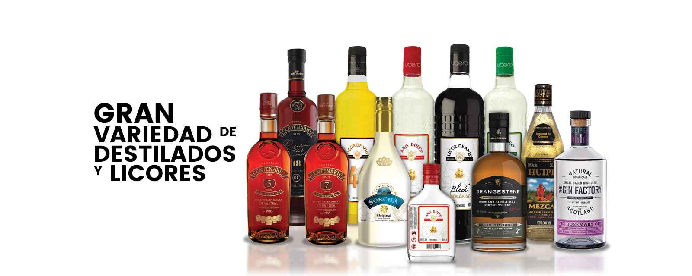
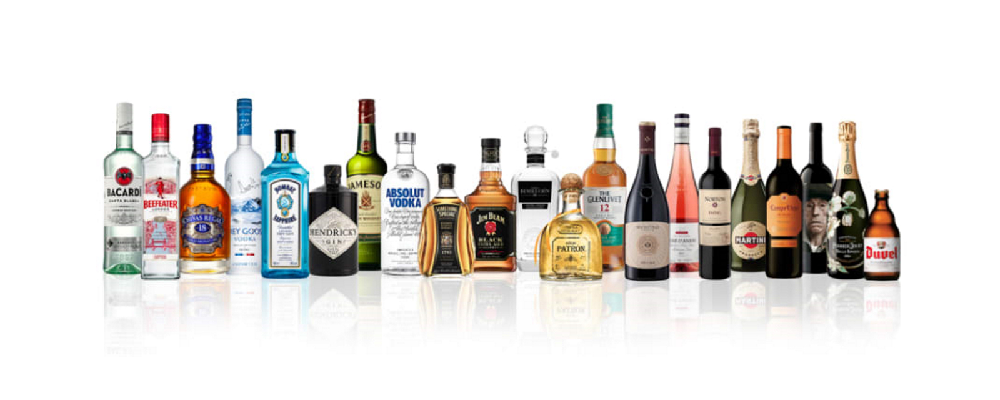
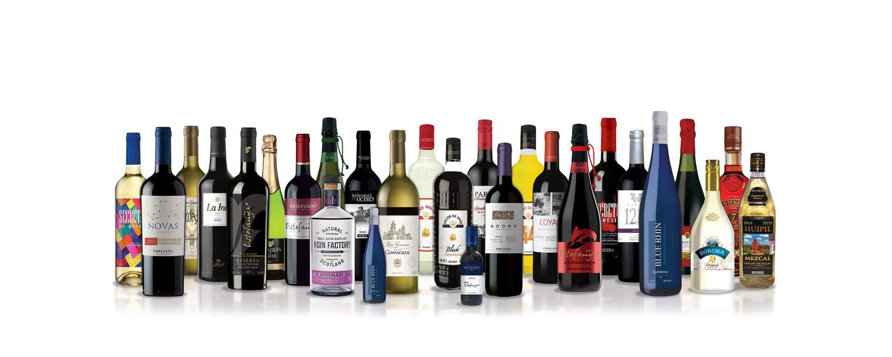
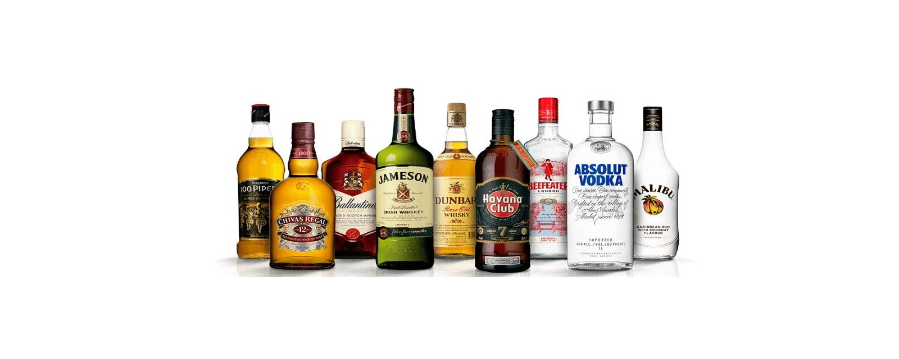
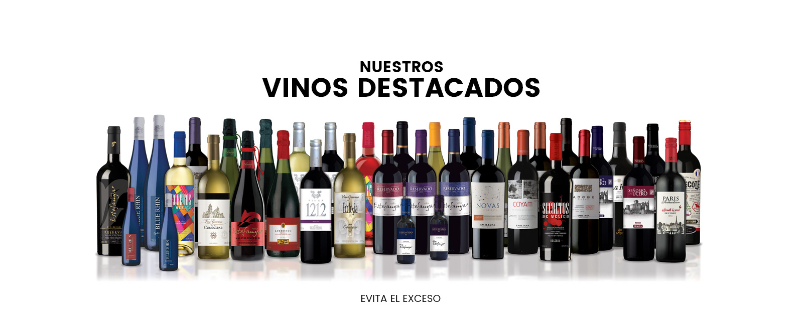
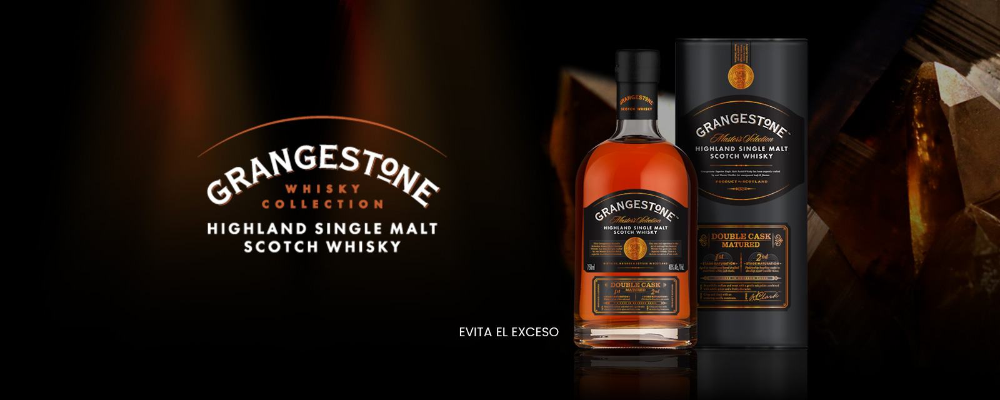
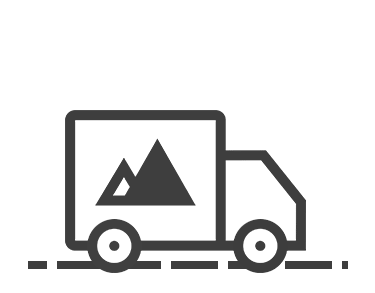
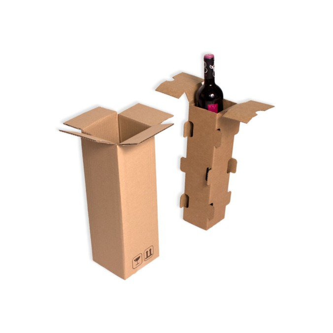
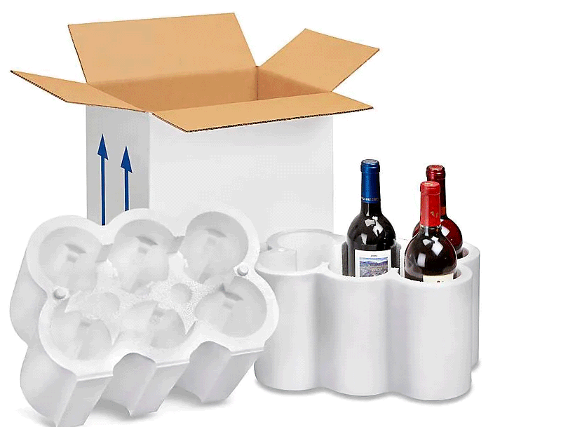

Bienvenidos a S&W Bebidas. Un emprendimiento de venta de Spirits & Wines. Contamos con stock permanente de los destilados y los vinos mas sofisticados y consumidos.
S&W Bebidas








Te invitamos a conocer y tomar nota de estas deliciosas bebidas que te harán ser el alma de la fiesta, no puedes quedarte sin lucir como un verdadero mixólogo con tus amigos, de nada.
5 Deliciosas recetas de cócteles con bebidas espirituosas
Aquí te presentamos un listado con las más famosas y deliciosos tragos o cócteles preparados con bebidas espirituosas. No te las puedes perder.
Tom Collins
Ingredientes de un Tom Collins
- 30 ml de ginebra
- 20 ml de zumo de limón
- 15 ml de soda
- 2 cucharadas de azúcar
- Hielo
- Una rodaja de limón
Preparación: En un vaso alto, Tom Collins se coloca el hielo al gusto, luego se le agrega la ginebra, el zumo de limón, y la azúcar. Se revuelve un poco y se termina rellenando con soda. Por último, se decora con una rodaja de limón
Shirley Temple
Ingredientes de un Shirley Temple
- 40 ml de Ginger ale
- 20 ml de zumo de naranja
- Un chorro de granadina
- Una cereza marrasquino
- Hielo al gusto
- Una rodaja de limón
En una coctelera se añade el zumo de naranja y el ginger ale Se agita enérgicamente por unos 15 segundos Luego se sirve en un vaso de vidrio con hielos al gusto Posteriormente se le agrega el chorro de granadina Y por último, se decora con una cereza y una rodaja de limón
Pisco Sour
Ingredientes de un Pisco Sour
- 50 ml de pisco
- 30 ml de jugo de limón
- 30 ml de sirope de azúcar
- Una clara de huevo
- 3 gotitas de Angostura
- Hielo al gusto
En una coctelera se agrega hielo al gusto, y todos los ingredientes excepto la angostura Se agita enérgicamente durante unos 30 segundos. Luego se vierte en un vaso de vidrio, en el cual se debe notar como la bebida se divide en una parte liquida y otra parte de espuma. Si esto sucede, no se preocupe, así debe quedar la bebida.Luego se le coloca las gotas de angostura sobre la espuma.
Martini
Ingredientes de un Martini
- 2 onzas de ginebra
- 1 toque de vermú
- 1 aceituna
Preparación: Verter en una coctelera las dos onzas de ginebra Luego se le agrega el vermú.Posteriormente en una copa tipo Martini, se sirve la bebida Y se le coloca una aceituna verde, que debe quedar en el fondo de la copa
Margarita
Ingredientes de un Margarita
- 35 ml de tequila
- 15 ml de jugo de lima
- 20 ml de triple seco
- Hielo
- Sal
- Una rodaja de limón
En un recipiente plano colocar sal y en otro un poco de jugo de lima Agarrar la copa del margarita y boca abajo mojarlo con el jugo de lima Luego pasar la copa por el recipiente con la sal. En una coctelera se agrega hielo Posteriormente se coloca el tequila, el jugo de lima, y el triple seco Se agita enérgicamente por unos 15 segundos. Luego se vierte en la copa del margarita, previamente decorada. Se le agrega una rodaja de lima
MEDIOS DE PAGO

ENVIOS A TODO EL PAIS
Cajas y embalajes especificos para botellas


